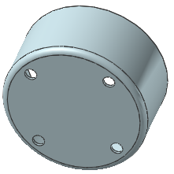

Create a circular hole pattern
-
Click Pattern Feature
 .
.
-
Select the hole.
-
In the Pattern Definition group, click Circular for the Layout.
-
For the Rotation Axis select the Datum CSYS origin point and +Z vector.
-
In the Angular Direction group, from the Spacing list, select Count and Pitch.
-
Type 4 in the Count box, 90 in the Pitch Angle box, and click OK.
